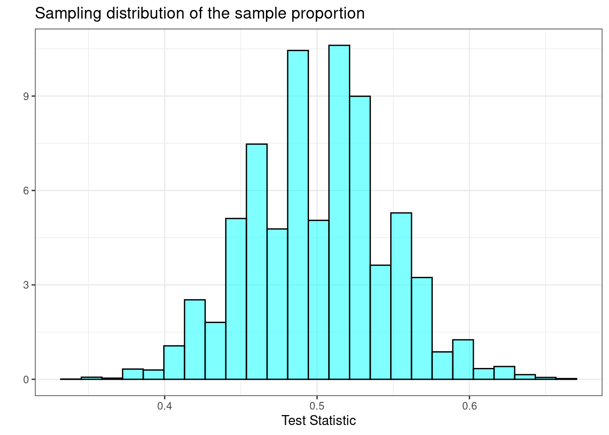
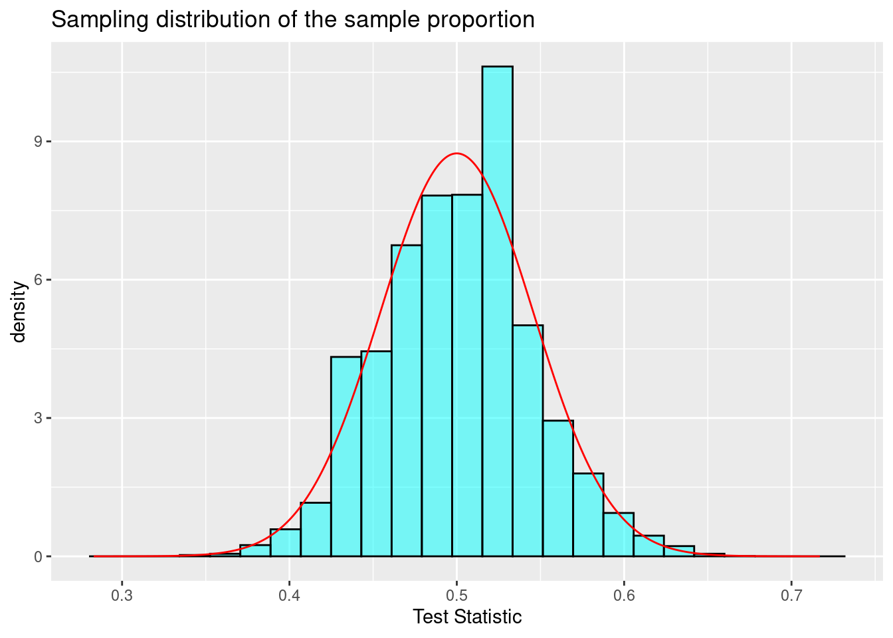
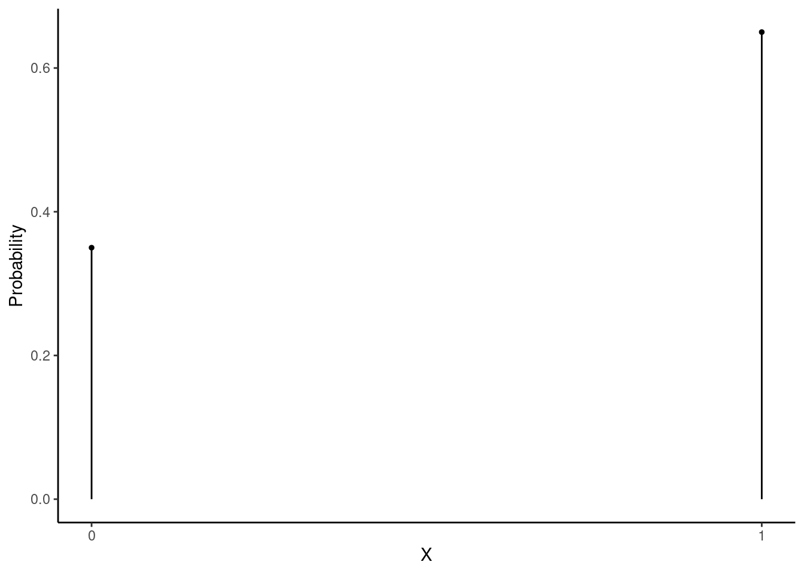
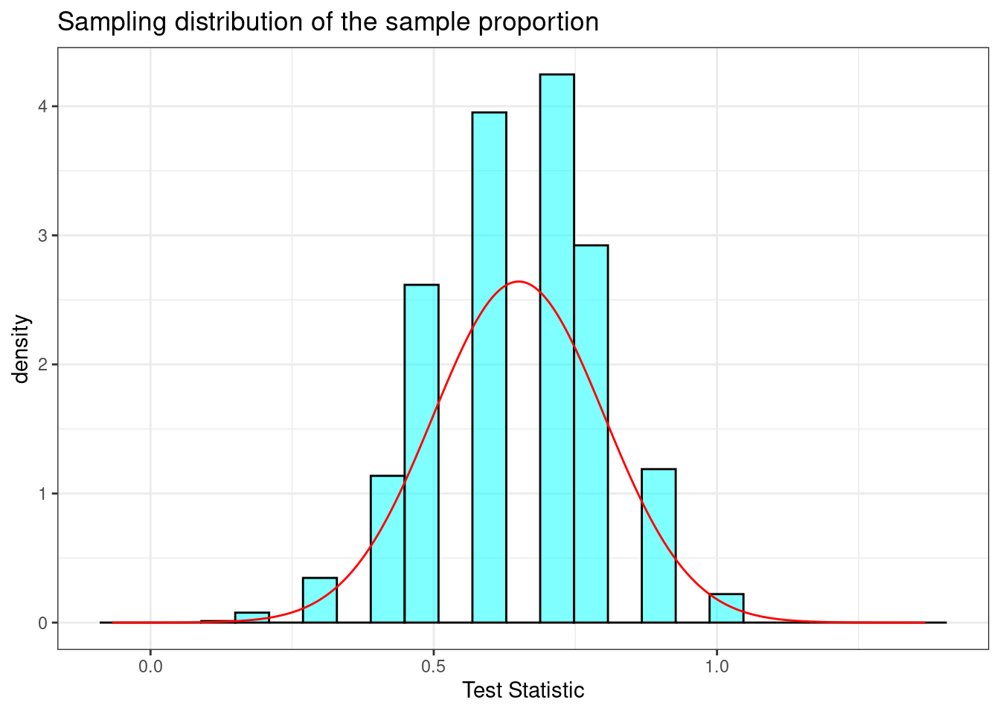
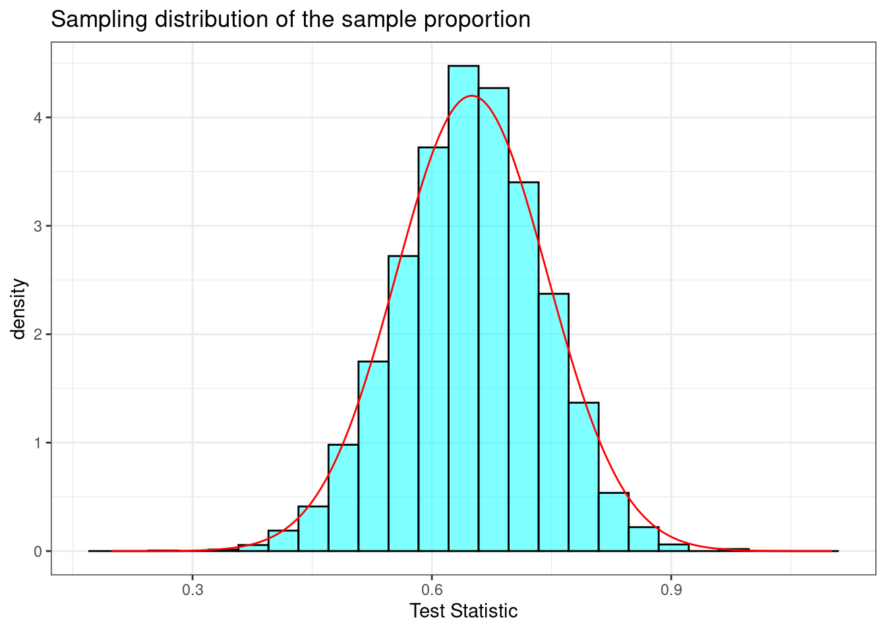
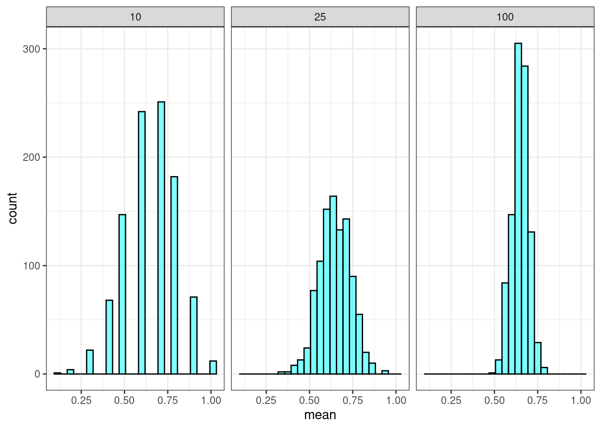
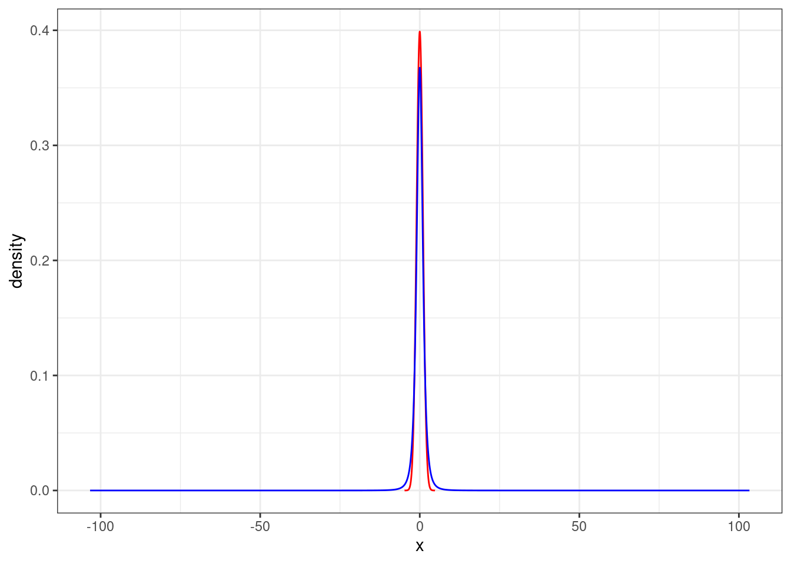
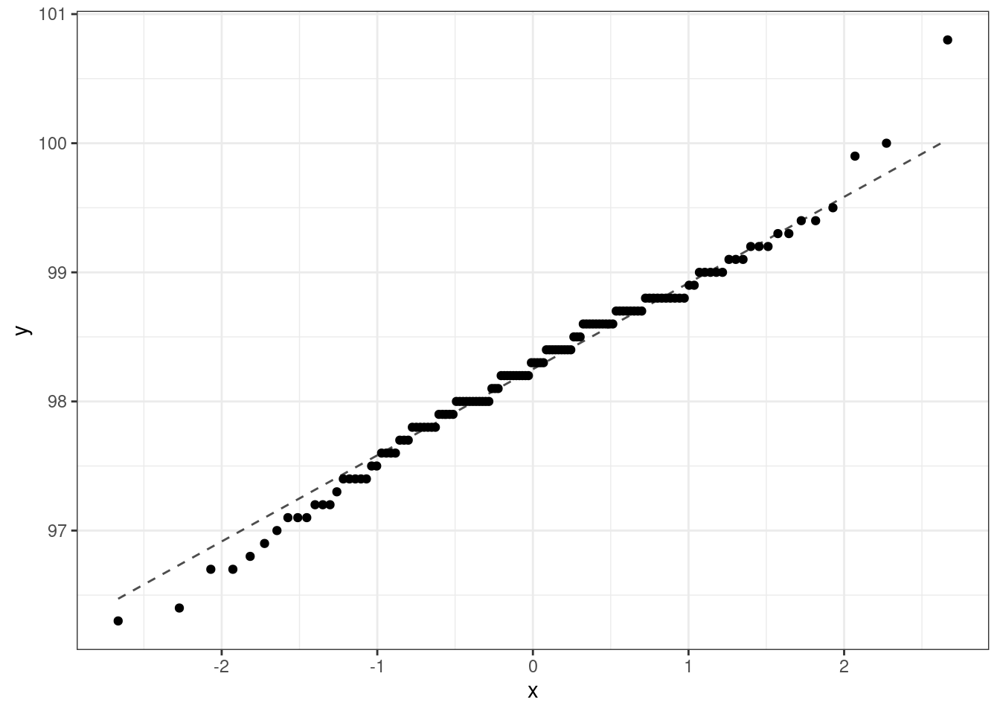

21 Hypothesis Testing with the Central Limit Theorem
21.1 Objectives
Explain the central limit theorem and when it can be used for inference.
Conduct hypothesis tests of a single mean and proportion using the CLT and
R.Explain how the \(t\) distribution relates to the normal distribution, where it is used, and how changing parameters impacts the shape of the distribution.
21.2 Central limit theorem
We’ve encountered several research questions and associated hypothesis tests so far in this block of material. While they differ in the settings, in their outcomes, and also in the technique we use to analyze the data, many of them have something in common: for a certain class of test statistics, the general shape of the sampling distribution under the null hypothesis looks like a normal distribution.
21.2.1 Null distribution
As a reminder, in the tapping and listening problem, we used the proportion of correct guesses as our test statistic. Under the null hypothesis, we assumed the probability of success was 0.5. The estimate of the sampling distribution of our test statistic is shown in Figure 21.1.
Exercise:
Describe the shape of the distribution and note anything that you find interesting.1
In Figure 21.2, we have overlayed a normal distribution on the histogram of the estimated sampling distribution. This allows us to visually compare a normal probability density curve with the empirical (based on data, or simulation in this case) sampling distribution.

This similarity between the empirical and theoretical distributions is not a coincidence, but rather is guaranteed by mathematical theory. This chapter will be a little more notation- and algebra-intensive than the previous chapters. However, the goal is to develop a tool that will help us find sampling distributions for many types of test statistics and, thus, find \(p\)-values. This chapter involves classical statistics often taught in AP high school classes, as well as many introductory undergraduate statistics courses. Remember that before the advances of modern computing, these mathematical solutions were all that was available.
21.2.2 Theorem - central limit theorem
Theorem: Let \(X_1, X_2, ..., X_n\) be a sequence of i.i.d., independent and identically distributed, random variables from a distribution with mean \(\mu\) and standard deviation \(\sigma < \infty\). Then,
\[ \bar{X} \overset{approx}{\sim}\textsf{Norm}\left(\mu,{\sigma\over\sqrt{n}}\right) \]
There is a lot going on in this theorem. First, notice we are drawing independent samples from the same parent population. The central limit theorem (CLT) does not specify the form of this parent distribution, only that it has a finite variance (\(\sigma < \infty\)). Second, the CLT tells us that if we form a new random variable that involves the sum of the individual random variables (in this case, the sample mean \(\bar{X}\)), the distribution of that new random variable is approximately normal. In the case of the sample mean, the expected value (the first parameter of the normal distribution) is the same mean as for the parent population. The standard deviation (the second parameter of the normal distribution) is the standard deviation of the parent population divided by the square root of the sample size \(n\). Let’s summarize these ideas.
The process of creating a new random variable from the sum of independent, identically distributed random variables is approximately normal.
The approximation to a normal distribution improves with sample size \(n\).
The mean and variance of the sampling distribution are a function of the mean and variance of the parent population, the sample size \(n\), and the form of the new random variable.
If you go back and review examples, exercises, and homework problems from the previous chapters on hypothesis testing, you will see that we found symmetric, normal-“looking” sampling distributions when we created test statistics that involved the process of summing. One example of a skewed sampling distribution was the golf ball example, where our test statistic was the difference between the maximum and minimum value (and did not involve a summation of all the observations). It is hard to overstate the historical importance of this theorem to the field of inferential statistics and science in general.
To get an understanding and some intuition of the central limit theorem, let’s simulate some data and evaluate.
21.2.3 Simulating data for the CLT
For this section, we are going to use an artificial example where we know the population distribution and parameters. We will repeat sampling from this population distribution many times and plot the distribution of the summary statistic of interest, the sample mean, to demonstrate the CLT. This is purely an educational thought experiment to give ourselves confidence about the validity of the CLT.
Suppose there is an upcoming election in Colorado and Proposition A is on the ballot. Now suppose that 65% of Colorado voters support Proposition A. We poll a random sample of \(n\) Colorado voters. Prior to conducting the sample, we can think about the sample as a sequence of i.i.d. random variables (voters) from the binomial distribution with one trial (vote) in each run and a probability of success (support for the measure) of 0.65. In other words, each random variable will take a value of 1 (support) or 0 (oppose). Figure 21.3 is a plot of the pmf of the parent distribution (\(\textsf{Binom}(1,\, 0.65)\)):

This is clearly not normally distributed. It is, in fact, discrete. The mean of \(X\) is 0.65 and the standard deviation is \(\sqrt{0.65(1 - 0.65)} = 0.477\).
In our first simulation, we let the sample size be \(n = 10\). This is typically too small for the CLT to apply, but we will still use it as a starting point. In the code below, we will obtain a sample of size 10 from this binomial distribution and record the observed mean \(\bar{x}\), which is a method of moments estimate of the probability of success. We will repeat this process 10,000 times to get an empirical distribution of \(\bar{X}\). (Note that \(\bar{X}\) is a mean of 1s and 0s, and can be thought of as the proportion of voters in the sample that support the measure. Often, the population proportion is denoted as \(\pi\) and the sample proportion is denoted as \(\hat{\pi}\).)
set.seed(5501)
results <- do(10000)*mean(rbinom(10, 1, 0.65))Since we are summing i.i.d. variables, the sampling distribution of the mean should look like a normal distribution. The mean should be close to 0.65 (the mean from the parent distribution), and the standard deviation should be close to \(\sqrt{\frac{p(1 - p)}{n}} = \sqrt{\frac{0.65(1 - 0.65)}{10}} = 0.151\) (the standard deviation of the parent distribution divided by \(\sqrt{n}\)).
favstats(~mean, data = results) min Q1 median Q3 max mean sd n missing
0.1 0.5 0.7 0.8 1 0.64932 0.1505716 10000 0Remember from our chapters on probability, these results for the mean and standard deviation do not depend on the CLT. They are results from the properties of expectation on independent samples. The distribution of the sample mean (i.e., the shape of the sampling distribution) is approximately normal as a result of the CLT, Figure 21.4.

Note that the sampling distribution of the sample mean has a bell-curve shape, but with some skew to the left for this particular small sample size. That is why we state that the approximation improves with sample size.
As a way to determine the impact of the sample size on inference to the population, let’s record how often a sample of 10 failed to indicate support for the measure. (How often was the sample proportion less than or equal to 0.5?) Remember, in this artificial example, we know that the population is in favor of the measure, 65% approval. However, if our point estimate is below 0.5, we would be led to believe that the population does not support the measure.
results %>%
summarise(low_result = mean(~mean <= 0.5)) low_result
1 0.2505Even though we know that 65% of Colorado voters support the measure, a sample of size 10 failed to indicate support 25.05% of the time.
Let’s take a larger sample. In the code below, we will repeat what we did above but with a sample of size 25. Figure 21.5 plots the sampling distribution.
set.seed(5501)
results <- do(10000)*mean(rbinom(25, 1, 0.65))

results %>%
summarise(low_result = mean(~mean <= 0.5)) low_result
1 0.0623When increasing the sample size to 25, the standard deviation of our sample proportion decreased. According to the central limit theorem, it should have decreased to \(\sigma/\sqrt{25} = \sqrt{\frac{p(1 - p)}{25}} = 0.095\). Also, the skew became less severe (the shape became “more normal”). Further, the sample of size 25 failed to indicate support only 6.23% of the time. It reasonably follows that an even larger sample would continue these trends. Figure 21.6 demonstrates these trends.

21.2.4 Summary of example
In this example, we knew the true proportion of voters who supported the proposition. Based on that knowledge, we simulated the behavior of the sample proportion. We did this by taking a sample of size \(n\), recording the sample proportion (sample mean of 1s and 0s), and repeating that process thousands of times. In reality, we will not know the true underlying level of support; further, we will not take a sample repeatedly, thousands of times, from the parent population. Sampling can be expensive and time-consuming. Thus, we would take one random sample of size \(n\), and acknowledge that the resulting sample proportion is but one observation from an underlying normal distribution. We would then determine what values of \(\pi\) (the true unknown population proportion) could reasonably have resulted in the observed sample proportion.
21.3 The \(t\)-distribution
Prior to using the CLT in hypothesis testing, we want to discuss other sampling distributions that are based on the CLT or normality assumptions. A large part of theoretical statistics has been about mathematically deriving the distribution of sample statistics. In these methods, we obtain a sample statistic, determine the distribution of that statistic under certain conditions, and then use that information to make a statement about the population parameter. We now discuss a commonly used sampling distribution: the \(t\) distribution.
21.3.1 Student’s t
Let \(X_1, X_2, ..., X_n\) be an i.i.d. sequence of random variables, each with mean \(\mu\) and standard deviation \(\sigma\). Recall that the central limit theorem tells us that
\[ \bar{X} \overset{approx}{\sim}\textsf{Norm}\left(\mu, {\sigma\over\sqrt{n}}\right) \]
Rearranging, we find that the test statistic on the left-side of the below expression is distributed approximately standard normal (a normal distribution with mean \(\mu = 0\) and standard deviation \(\sigma = 1\)):
\[ {\bar{X} - \mu\over\sigma/\sqrt{n}} \overset{approx}{\sim} \textsf{Norm}(0, 1) \]
Again, \(\sigma\) is unknown. Thus, we have to estimate it. We can estimate it with \(S\), the sample standard deviation, but now we need to know the distribution of \({\bar{X} - \mu\over S/\sqrt{n}}\). This does not follow the normal distribution.
Lemma: Let \(X_1, X_2, ..., X_n\) be an i.i.d. sequence of random variables from a normal population with mean \(\mu\) and standard deviation \(\sigma\). Then, \[ {\overline{X} - \mu\over S/\sqrt{n}} \sim \textsf{t}(n - 1) \]
The \(\textsf{t}(n - 1)\) distribution is read as the “\(t\)” distribution. The \(t\) distribution has one parameter: degrees of freedom. The left-hand side of the expression above \(\left({\bar{X}-\mu\over S/\sqrt{n}}\right)\) is referred to as the \(t\) statistic, and it tells us how many standard deviations our sample mean is from the population mean.
The proof of this lemma is outside the scope of this book, but it is not terribly complicated. It follows from some simple algebra and the fact that the ratio of a standard normal random variable and the square root of a chi-squared random variable, \(S\), divided by it’s degrees of freedom follows a \(t\) distribution.
The \(t\) distribution is very similar to the standard normal distribution, but has longer tails. This seems to make sense in the context of estimating \(\mu\) because substituting the sample standard deviation \(S\) for the population standard deviation \(\sigma\) adds variability to the random variable.
Figure 21.7 is a plot of the \(t\) distribution, shown as a blue line, and has a bell shape that looks very similar to a normal distribution, show as a red line. However, the tails of the \(t\) distribution are thicker, which means observations are more likely to fall beyond two standard deviations from the mean than under the normal distribution. When our sample is small, the value \(s\) used to compute the standard error \((s/\sqrt{n})\) isn’t very reliable. The extra thick tails of the \(t\) distribution are exactly the correction we need to resolve this problem. When the degrees of freedom is about 30 or more, the \(t\) distribution is nearly indistinguishable from the normal distribution.
gf_dist("norm", color = "red") %>%
gf_dist("t", df = 3, color = "blue") %>%
gf_theme(theme_bw())

21.3.2 Important Note
You may have noticed an important condition in the lemma above. It was assumed that each \(X_i\) in the sequence of random variables was normally distributed. While the central limit theorem has no such normality assumption, the distribution of the \(t\) statistic is subject to the distribution of the underlying population. With a large enough sample size, this assumption is not necessary. There is no magic number, but some resources state that as long as \(n\) is at least 30-40, the underlying distribution doesn’t matter. This coincides with what we said previously: when the degrees of freedom is about 30 or more, the \(t\) distribution is nearly indistinguishable from the normal distribution. For smaller sample sizes, the underlying distribution should be relatively symmetric and unimodal.
One advantage of simulation-based inference methods is that these methods do not rely on any such distributional assumptions. However, the simulation-based methods may have smaller power for the same sample size.
21.4 Hypothesis tests using the CLT
We are now ready to reexamine some of our previous examples using the mathematically derived sampling distribution via the CLT.
21.4.1 Body temperature
We will repeat the body temperature analysis from Chapter 20 homework, now using the CLT. We will use \(\alpha = 0.05\). Recall that a paper from the American Medical Association2 questioned the long-held belief that the average body temperature of a human is 98.6 degrees Fahrenheit. The authors of the paper believe that the average human body temperature is less than 98.6.
21.4.1.1 Step 1- State the null and alternative hypotheses
\(H_0\): The average body temperature is 98.6; \(\mu = 98.6\)
\(H_A\): The average body temperature is less than 98.6; \(\mu < 98.6\)
21.4.1.2 Step 2 - Compute a test statistic.
The population variance is unknown, so we will use the \(t\) distribution. Remember that
\[ {\bar{X} - \mu\over S/\sqrt{n}} \sim \textsf{t}(n - 1) \] Thus, our test statistic is
\[ \frac{\bar{x} - 98.6}{s / \sqrt{n}} \]
The data is available in the file “temperature.csv”.
favstats(~temperature, data = temperature) min Q1 median Q3 max mean sd n missing
96.3 97.8 98.3 98.7 100.8 98.24923 0.7331832 130 0temperature %>%
summarise(mean = mean(temperature), sd = sd(temperature),
test_stat = (mean - 98.6) / (sd / sqrt(130)))# A tibble: 1 × 3
mean sd test_stat
<dbl> <dbl> <dbl>
1 98.2 0.733 -5.45Remember, the \(t\) statistic tells us how many standard deviations the sample mean is from the population mean (the null hypothesis value). The sample mean of our data is over 5 standard deviations below the null hypothesis mean. We have some assumptions that we will discuss at the end of this problem.
21.4.1.3 Step 3 - Determine the \(p\)-value.
We now want to find the \(p\)-value from \(\mbox{P}(t \leq -5.45)\) on 129 \((n - 1)\) degrees of freedom, given the null hypothesis is true. That is, given the true mean human body temperature is 98.6. We will use R to get the one-sided \(p\)-value.
pt(-5.45, 129)[1] 1.232178e-07We could also use the R function t_test(), in which we specify the variable of interest, the data set, the hypothesized mean value, and the alternative hypothesis. Remember to use help(t_test) or ?t_test to access the R documentation for the t_test function.
t_test(~temperature, data = temperature, mu = 98.6, alternative = "less")
One Sample t-test
data: temperature
t = -5.4548, df = 129, p-value = 1.205e-07
alternative hypothesis: true mean is less than 98.6
95 percent confidence interval:
-Inf 98.35577
sample estimates:
mean of x
98.24923 You should notice this \(p\)-value is much smaller than the \(p\)-value from the method used in homework problem 3 in the last chapter. That is because this test statistic involves more assumptions and uses the data as continuous and not discrete (a positive or negative difference between 98.6 and the observed value).
21.4.1.4 Step 4 - Draw a conclusion
Based on our data, if the true mean human body temperature is 98.6, then the probability of observing a mean of 98.25 or less is only 0.00000012. This is extremely unlikely, so we reject the null hypothesis that the average body temperature is 98.6 and conclude that there is sufficient evidence to say that the true average body temperature is less than 98.6.
21.5 Summary and rules of thumb
We have covered a great deal in this chapter. At its core, the central limit theorem is a statement about the distribution of a sum of independent, identically distributed random variables. This sum is approximately normal.
21.5.1 Numerical data
First, we summarize rules of thumb for the use of the CLT and \(t\) distribution.
The central limit theorem works regardless of the underlying distribution. However, if the parent population is highly skewed, then more data is needed. The CLT works well once the sample sizes exceed 30 to 40. If the data is fairly symmetric, then less data is needed.
When estimating the mean and standard error from a sample of numerical data, the \(t\) distribution is a little more accurate than the normal distribution. But there is an assumption that the parent population is normally distributed. The \(t\) distribution works well even for small samples, as long as the data is close to symmetrical and unimodal.
For medium-sized samples, at least 15 data points, the \(t\) distribution still works as long as the data is roughly symmetric and unimodal.
For large data sets 30-40 or more, the \(t\) or the normal distribution can be used, but we suggest always using the \(t\) distribution.
Now, let’s discuss the assumptions of the \(t\) distribution and how to check them.
Independence of observations. This is a difficult assumption to verify. If we collect a simple random sample from less than 10% of the population, or if the data are from an experiment or random process, we feel better about this assumption. If the data comes from an experiment, we can plot the data versus time collected to see if there are any patterns that indicate a relationship. A design of experiments course discusses these ideas in more detail.
Observations come from a nearly normal distribution. This second condition is difficult to verify with small data sets. We often (i) take a look at a plot of the data for obvious departures from the normal distribution, usually in the form of prominent outliers, and (ii) consider whether any previous experiences alert us that the data may not be nearly normal. However, if the sample size is somewhat large, then we can relax this condition. For example, moderate skew is acceptable when the sample size is 30 or more, and strong skew is acceptable when the sample size is about 60 or more.
A typical plot used to evaluate the normality assumption is called the quantile-quantile plot. We form a scatterplot of the empirical quantiles from the data versus exact quantile values from the theoretical distribution. If the points fall along a line, then the data match the distribution. An exact match is not realistic, so we look for major departures from the line.
Figure 21.8 is our quantile-quantile plot for the body temperature data. The largest value may be an outlier. We may want to verify the data point was entered correctly. The fact that the points are above the line for the larger values and below the line for the smaller values indicates that our data may have longer tails than the normal distribution. There are really only 3 values in the larger quantiles, so in fact, the data may be slightly skewed to the left. This was also indicated by a comparison of the mean and median. However, since we have 130 data points these results do not overly concern us, and should not impact our findings.
gf_qq(~temperature, data = temperature) %>%
gf_qqline(~temperature, data = temperature) %>%
gf_theme(theme_bw())

Extreme data points, outliers, can be cause for concern. In later chapters, we will look for ways to detect outliers but we have also seen them in our boxplots. First, outliers are problematic because normal distributions rarely have outliers, so the presence of one may indicate a departure from normality. Second, outliers have a big impact on estimation methods for the mean and standard deviation, whether it is a method of moments or maximum likelihood estimate.
We can also check the impacts of the assumptions by using other methods (like those in previous chapters) for the hypothesis test. If all methods give the same conclusion, we can be confident in the results. Another way to check robustness to assumptions is to simulate data from different distributions and evaluate the performance of the test under the simulated data.
21.5.2 Binary data
The distribution of a binomial random variable or simple scalar transformations of it, such as the proportions of success found by dividing by the sample size, are approximately normal by the CLT. Since binomial random variables are bounded by zero and the number of trials, we have to make sure our probability of success is not close to zero or one. That is, the number of successes is not close to 0 or \(n\). A general rule of thumb is that the number of successes and failures be at least 10.
21.5.3 Tappers and listeners
Recall that a Stanford University graduate student conducted an experiment using the tapper-listener game. The tapper picks a well-known song, taps it’s tune, and sees if the listener can guess the song. About 50% of the tappers expected the listener to correctly guess the song. The researcher wanted to determine whether this was a reasonable expectation.
21.5.3.1 Step 1- State the null and alternative hypotheses.
Here are the two hypotheses:
\(H_0\): The tappers are correct, and generally 50% of the time listeners are able to guess the tune. \(p = 0.50\)
\(H_A\): The tappers are incorrect, and either more than or less than 50% of listeners will be able to guess the tune. \(p \neq 0.50\)
21.5.3.2 Step 2 - Compute a test statistic.
The test statistic that we want to use is the sample mean \(\bar{X}\). This is the mean of the 1s and 0s for each guess, where a 1 indicates a correct guess and a 0 indicates an incorrect guess. This is a method of moments estimate of the probability of success. These are independent samples from the same binomial distribution, so by the CLT,
\[ \bar{X} \overset{approx}{\sim}\textsf{Norm}\left(\pi,\sqrt\frac{\pi(1-\pi)}{n}\right) \]
As we learned, this approximation improves with sample size. As a rule of thumb, most analysts are comfortable with using the CLT for this problem if the number of successes and failures are both 10 or greater.
In our study, 42 out of 120 listeners (\(\bar{x} = \hat{p} = 0.35\)) were able to guess the tune. This is the observed value of the test statistic.
21.5.3.3 Step 3 - Determine the \(p\)-value.
We now want to find the \(p\)-value from the one-sided probability \(\mbox{P}(\bar{X} \leq 0.35)\), given the null hypothesis is true. That is, given that the true probability of success is 0.50. We will use R to get the one-sided value and then double it since the test is two-sided and the sampling distribution is symmetrical.
2*pnorm(0.35, mean = 0.5, sd = sqrt(0.5*0.5 / 120))[1] 0.001015001That is a small \(p\)-value and consistent with what we got using both the exact binomial test and the simulated empirical \(p\)-values in Chapter 20.
Important note: In the calculation of the standard deviation of the sampling distribution, we used the null hypothesized value of the probability of success.
21.5.3.4 Step 4 - Draw a conclusion
Based on our data, if the listeners were guessing correct 50% of the time, there is about a 1-in-1000 chance that only 42 or less, or 78 or more, listeners would get it right. This is much less than 0.05, so we reject the null hypothesis that the listeners are guessing correctly half of the time. There is sufficient evidence to conclude that the true correct-guess rate is different from 50%.
Note that R has built in functions to perform this test. If you explore these functions, use help(prop.test) or ?prop.test to learn more. You will find options to improve the performance of the test. You are welcome to and should read about these methods. Again, before computers, researchers spent time optimizing the performance of the asymptotic methods such as the CLT.
Here is the test of a single proportion for the tapper-listener example using R.
prop.test(x = 42, n = 120, p = 0.5)
1-sample proportions test with continuity correction
data: 42 out of 120
X-squared = 10.208, df = 1, p-value = 0.001398
alternative hypothesis: true p is not equal to 0.5
95 percent confidence interval:
0.2667083 0.4430441
sample estimates:
p
0.35 The \(p\)-value is small, reported as \(0.0014\). We will study the confidence interval soon, so don’t worry about that part of the output yet. The alternative hypothesis is also listed, and has options for one-sided and two-sided tests.
Exercise:
How do you conduct a one-sided test? What if the null value were 0.45?3
pval(prop.test(42, 120, alternative = "less", p = 0.45)) p.value
0.0174214 The exact test uses the function binom.test().
binom.test(42,120)
data: 42 out of 120
number of successes = 42, number of trials = 120, p-value = 0.001299
alternative hypothesis: true probability of success is not equal to 0.5
95 percent confidence interval:
0.2652023 0.4423947
sample estimates:
probability of success
0.35 This is the same as the code we used in Chapter 20:
2*pbinom(42, 120, prob = 0.5)[1] 0.001299333In general, the distribution is reasonably symmetric. It is unimodal and looks like a normal distribution.↩︎
Mackowiak, P. A., Wasserman, S. S., and Levine, M. M. (1992), “A Critical Appraisal of 98.6 Degrees F, the Upper Limit of the Normal Body Temperature, and Other Legacies of Carl Reinhold August Wunderlich,” Journal of the American Medical Association, 268, 1578-1580.↩︎
We will only extract the \(p\)-value in this exercise.↩︎